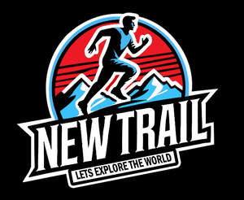

Trade Mark Journal No.2025/009 28 February 2025
UK00004161549 17 February 2025 (18,25)

- Class 18
- Towelling bags; Briefcases [leatherware]; Bags for clothes; Bags; Tote bags; Luggage bags; Duffle bags; Duffel bags; Carry-on bags; Carry-all bags; Belt bags and hip bags; Carrying bags; Bags for umbrellas; Diaper bags; Luggage, bags, wallets and other carriers; Crossbody bags; Cloth bags; Bucket bags; Leather bags; Nappy bags; Canvas bags; Duffel bags for travel; Shoe bags; Belt bags; Clutch bags; Wheeled bags; Kit bags; Travel bags; Bags for travel; Garment bags; Messenger bags; Leather bags and wallets; Shoulder bags; Make-up bags; Waterproof bags; Cosmetic bags; Camping bags; Umbrella bags; Courier bags; Bags for campers; Roll bags; Bags for carrying pets; Hand bags; Gym bags; Travelling bags; Cabin bags; Flight bags; Traveling bags; Beach bags; Boot bags; Mesh shopping bags; Mesh bags for shopping; Leather shopping bags; Canvas shopping bags; Hiking bags; Knitting bags; Bum bags; Roller bags; Suit bags; Hunting bags; Waist bags.
- Class 25
- Tracksuits; Sweatsuits; Tracksuit bottoms; Tracksuit tops; Jerseys [clothing]; Sweatshirts; Open-necked shirts; Jackets [clothing]; Hoodies; Jackets being sports clothing; Jumpsuits; Men's and women's jackets, coats, trousers, vests; Nappy pants [clothing]; Hooded sweat shirts; Short-sleeved T-shirts; Sweatpants; Hooded sweatshirts; Short-sleeved shirts; Shirts for suits; Sport shirts; Pyjamas; Jackets (Stuff -) [clothing]; Stuff jackets [clothing]; Shirts; Soccer shirts; Long-sleeved shirts; Leggings [trousers]; Sleeveless jerseys; Quilted jackets [clothing]; Jogging outfits; Shorts [clothing]; Sleeveless jackets; Jogging bottoms [clothing]; Sports shirts; Hooded pullovers; Playsuits [clothing]; Jackets; Denims [clothing]; Tee-shirts; T-shirts; Jerseys; Tennis shirts; Football shirts; Blazers; Sportswear; Headbands [clothing]; Headbands for clothing; Wristbands [clothing]; Sweat-absorbent underwear; Jumpers [pullovers]; Sports jackets; Sweat jackets; Denim jackets; Gymwear; Sneakers; Sleeved jackets; Sweat shirts; Clothes for sport; Dress shirts; Trousers shorts; Pyjamas [from tricot only]; Sweat-absorbent underclothing [underwear]; Jockstraps [underwear]; Knitwear [clothing]; Trousers; Fleece jackets; Overcoats; Overshirts; Trousers for sweating; Sleeveless pullovers; Pullovers; Hoods [clothing]; Clothes for sports; Sheepskin jackets; Capes (clothing); Suede jackets; Gilets; Embroidered clothing; Gloves [clothing]; Gloves as clothing; Padded jackets; Sweatbands; Collared shirts; Cardigans; Polo shirts; Clothes; Jogging sets [clothing]; Sports jerseys; Short-sleeve shirts; Shoes; Insoles for shoes and boots; High-heeled shoes; Sneakers [footwear]; Dress shoes; Slip-on shoes; Leather shoes; Tongues for shoes and boots; Jogging shoes; Esparto shoes or sandals; Walking shoes; Rubber shoes; Pullstraps for shoes and boots; Hiking shoes; Running shoes; Soccer shoes; Sandals and beach shoes; Waterproof shoes; Shoe soles; Heel pieces for shoes; Dance shoes; Canvas shoes; Shoes for leisurewear; Cycling shoes; Sports shoes; Platform shoes; Footwear soles; Sport shoes; Mountaineering shoes; Baby shoes; Insoles for footwear; Roller shoes; Football shoes; Baseball shoes; Riding shoes; Rain shoes; Training shoes; Beach shoes; Shoes for casual wear; Leisure shoes; Shoes for infants; Heel protectors for shoes; Women's shoes; Work shoes; Footwear; Flip-flops for use as footwear; Tap shoes; Hidden heel shoes; Pumps [footwear]; Infants' shoes; Sandals; Boots; Trainers [footwear]; Knitted baby shoes.
HAPPY FOR YOU LIMITED
MASOOD ANWAR